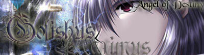

About Webmaster Gofishus/Proximus:


Name: Tom/Tong
Email: Gofishus@hotmail.com
MSN Messenger: Gofishus@hotmail.com
AIM: GofishusP
Ethnicity: Chinese (Mandarin)
Gender: Male (duh?)
Age: 17 (going on 30)
Blogs:
www.myspace.com/gofishus
www.xanga.com/gofishus
Information:
My real name is actually Tom (chinese name Tong) and i
have been involved in HTML since...grade 7 i believe
(now im in grade 12). I don't really have much knowledge
outside HTML/CSS/Javascript (although i have designed
Visual Basic.net and certain Flash-based programs) and
if i had patience i would take the time to learn PHP and
ASP =P. As you can see,I'm very interested in computers
and technology in general.I used to play alot of video
games too but now that i have school and stuff i don't
have as much time as i used to. In my spare time, im
usually on the comp chattin or out working or playing my
guitar xP. Really, I don't get mad easily and i pretty
much get along with most people. Oh, and you can comment
on my blogs if you want to, but i rarely ever update :P.
Words of Wisdom:
Quote: "True power lies in your ability to control the fate of others..."
"'If the doors of perception were to be cleansed every thing would appear
to man as it is, infinite'"
"'Experience is the name that everyone gives to their mistakes'"
"'The pure and simple truth is rarely pure and never simple'"
"'Expect the Unexpected'"
"'Knowledge is power'"
"'What's more desirable: to be loved or to be feared?'"
"'Love is just a better form of hate'"
Websites I've created:
Tong's DBZ Domain(www.tongzou.0catch.com)
SuperTong's Liero Center(www.angelfire.com/d20/liero)
Chrono Trigger Realm(www.angelfire.com/d20/crono)
DragonBall Z Fantasy(www.angelfire.com/d20/tong)
Other:
My DBZ/Evangelion music vid